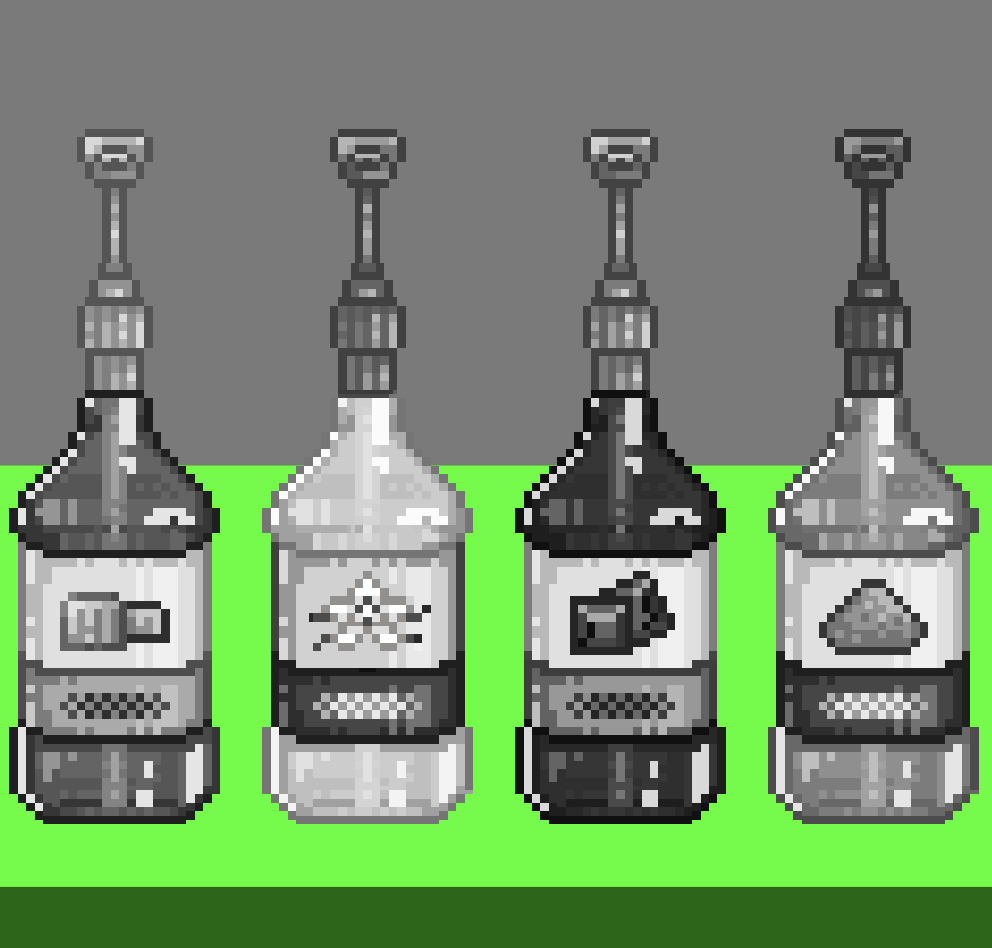

Gigabite was created for CSC2463 - Programming Digital Media at LSU, as a final project to integrate all of the elements of the class. Gigabite integrates graphics, sound, and physical computing by using p5.js, Tone.js and the Arduino libraries.
A decent amount of research went into cafes and coffeebar layouts while I planned this game. Luckily, I have a good few friends who worked as baristas that reviewed my placements and provided me lots of tips about the specific order in which certain drinks are made. I also consulted YouTube and other social media to watch videos of espresso machines being used.
The initial layout for the game. I mocked this up in Illustrator to use as a guide for creating shapes in p5.js. Though the graphics used in the game are made in Aseprite, while I worked on the initial collisions and gamestates, this is what the project looked like.
I have experience with pixel art in the past, so I knew I wanted to create sprites for the entire game by hand. As an Art major, I definitely had an upperhand at this stage of development.
The first graphics I drew for the game. I contemplated keeping the whole thing black and white to spend less time on the graphics, but the brown sugar syrup on the right just read as "Minecraft gunpowder" that way.
By far the hardest graphic I had to do for this game. I wanted the metal to look like metal. It also required the most animation.
An image of my arudino board set up for the project. The digital input slot for the button must be in slot 2, and for the LED slot is slot 12, as visible in my code.
I'd like to return to this project for fun someday, and hopefully allow for more random orders, random cats, and more graphics. I really enjoyed making this, so I see myself returning to it someday.